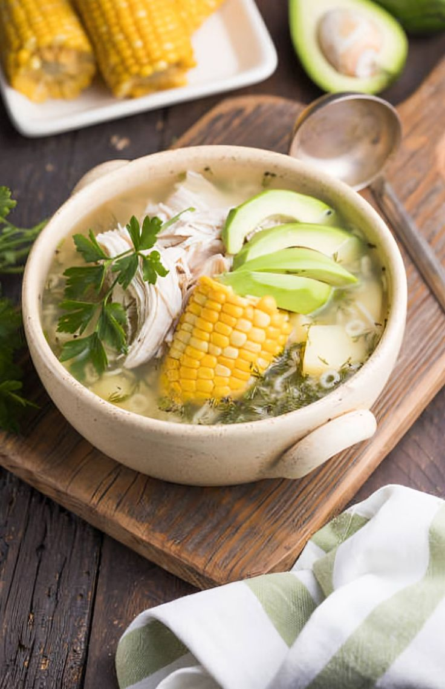
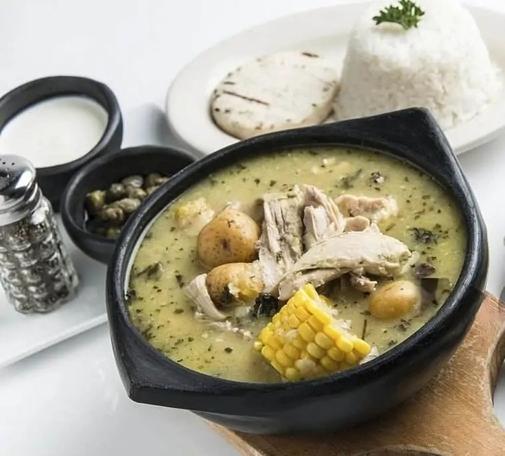
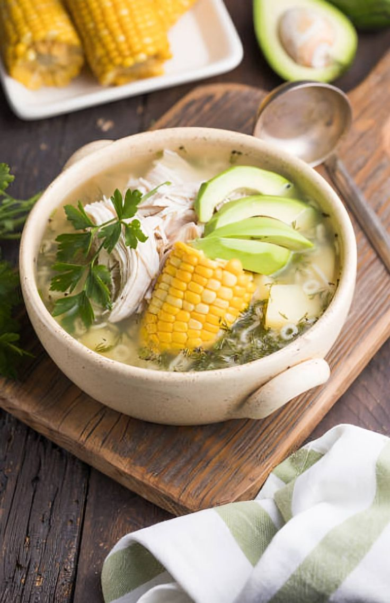
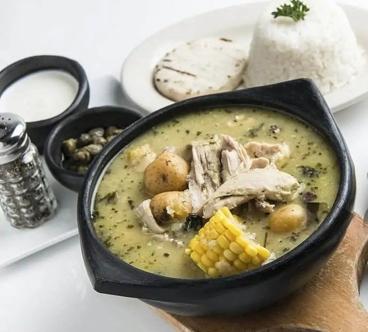

Ajiaco:
El ajiaco es una sopa típica de Colombia, especialmente de la región de Bogotá. Es un plato caliente y reconfortante, perfecto para los días fríos.
Ingredientes:
- Pollo
- Papas
- Maíz
- Guisantes
- Cilantro
- Crema de leche
Preparación:
- Cocinar el pollo en agua con sal y retirar.
- Agregar las papas, el maíz y los guisantes al caldo y cocinar hasta que estén tiernos.
- Agregar el pollo desmenuzado y el cilantro picado.
- Servir caliente con una cucharada de crema de leche.
 



Bandeja Paisa:
La bandeja paisa es un plato típico de la región de Antioquia en Colombia. Es una combinación abundante de carnes, frijoles y plátano.
Ingredientes:
- Chicharrón
- Carne de res
- Arroz
- Frijoles
- Plátano maduro
- Huevo frito
Preparación:
- Cocinar el arroz y los frijoles.
- Freír el chicharrón, la carne de res y el plátano.
- Servir todo en un plato grande acompañado de huevo frito.

Arepa:
La arepa es un alimento básico en la dieta colombiana. Es una especie de pan plano hecho con masa de maíz y se puede comer sola o rellena.
Ingredientes:
- Harina de maíz
- Agua
- Sal
- Queso (opcional)
- Huevos revueltos (opcional)
Preparación:
- Mesclar la harina de maíz con agua y sal hasta obtener una masa suave.
- Formar pequeñas bolas de masa y aplanarlas para formar las arepas.
- Cocinar las arepas en una sartén caliente hasta que estén doradas por ambos lados.
- Se pueden servir solas o rellenas con queso, huevos revueltos, carne, aguacate, etc.